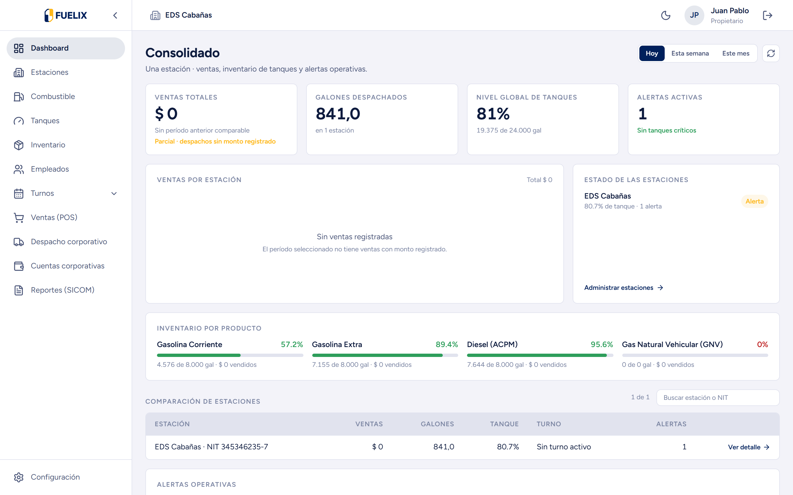
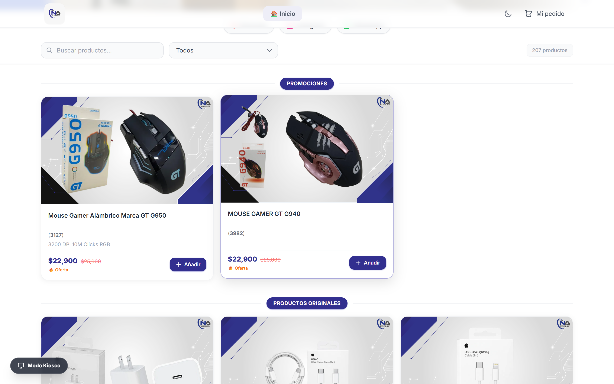

DISTRIBUTED SYSTEMS & NEXT-GEN INTERFACES


High-Frequency E-Commerce
{
"system": "pablo-mesh",
"edgeNodes": 12,
"modbusPolling": "12ms",
"turbopackCompile": "3.6s",
"gsapDeterministic": true,
"status": "HEALTHY_OPTIMAL"
}
JUAN PABLO LINARES • DISTRIBUTED SYSTEMS ARCHITECT